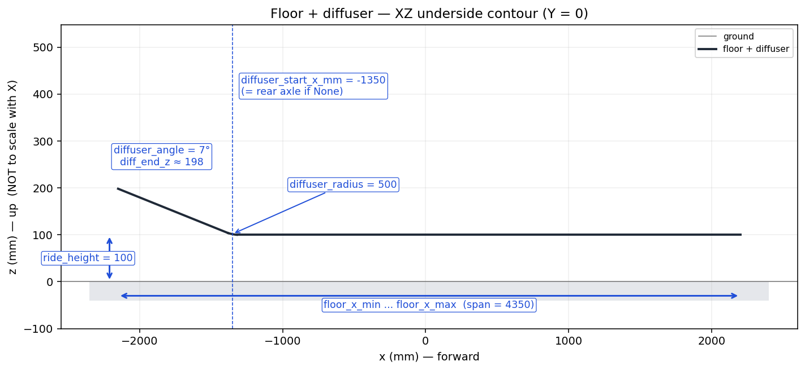
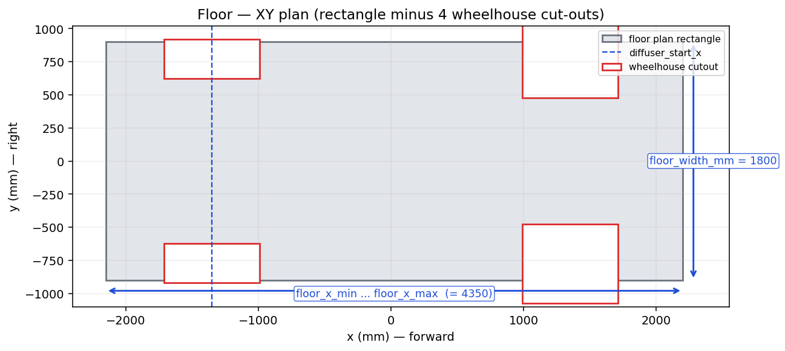

Builder 5 of 6
Floor & Diffuser Builder
Flat underbody floor + tangent-filleted rear diffuser ramp.
Returns either a zero-thickness Face (CFD surface mode)
or a thin solid slab.
Overview
The floor is built in two modes, picked by floor_thickness_mm:
| Value | Returns | Use for |
|---|---|---|
== 0 | cq.Face | CFD/aero surface meshes (single-sided triangle mesh; mesher extrudes wall thickness). |
> 0 | cq.Workplane (Solid) | Closed thin slab — directly printable / unioned with arches in solid mode. |
Both modes draw the same underside contour in the XZ plane and sweep / extrude it across the floor width.
XZ underside contour

Underside profile at Y = 0 — flat floor → tangent fillet → inclined diffuser ramp. The fillet’s tangent points are computed fromdiffuser_radius_mm and diffuser_angle_deg
so the three segments meet smoothly with no kinks. Note the Z axis is
not to scale with X.
XY plan

Plan view of the floor — a rectangle offloor_width_mm
by (floor_x_max − floor_x_min). The underbody assembler
cuts wheelhouse footprints (red rectangles) into this rectangle so
each wheel can pass through.
Parameter reference
Plan
| Parameter | Default | Units | Meaning |
|---|---|---|---|
floor_x_min | required | mm | Tail (rear) X of the floor. Computed by the underbody assembler
from rear_axle_x − rear_overhang_mm. |
floor_x_max | required | mm | Nose (front) X of the floor.
front_axle_x + front_overhang_mm. |
floor_width_mm | 1800 | mm | Full lateral width (extruded symmetrically about Y = 0). |
Ride / form
| Parameter | Default | Units | Meaning |
|---|---|---|---|
ride_height_mm | 100 | mm | Ground to floor underside (Z = 0 is ground). |
floor_thickness_mm | 0 | mm | 0 → surface mode (Face). >0 → solid slab of that thickness. |
Diffuser
| Parameter | Default | Units | Meaning |
|---|---|---|---|
diffuser_start_x_mm | None | mm | X where the floor stops being flat and the fillet begins.
None → underbody assembler substitutes
rear_axle_x. |
diffuser_angle_deg | 7 | ° | Ramp angle (positive = floor kicks upward at the rear). |
diffuser_radius_mm | 500 | mm | Tangent fillet between the flat floor and the ramp. |
below-cropper helper
build_below_cropper(spec) returns a solid half-space below
the underbody underside (extending well past the floor edges in X and
±1.5 × floor_width in Y). The wheelhouse builder uses it to crop arch
faces so the rear arches follow the diffuser slope instead of hanging
out below it.
This is shared infrastructure — the floor and wheelhouse builders agree
on exactly the same contour because both call
_diff_geometry()
internally.
Usage
from paramub import FloorSpec, build_floor
# Surface mode (zero-thickness Face)
spec = FloorSpec(
floor_x_min=-2150, floor_x_max=2200,
diffuser_start_x_mm=-1350,
diffuser_angle_deg=7,
diffuser_radius_mm=500,
)
face = build_floor(spec) # cq.Face
# Solid slab mode
spec2 = FloorSpec(
floor_x_min=-2150, floor_x_max=2200,
diffuser_start_x_mm=-1350,
floor_thickness_mm=4,
)
slab = build_floor(spec2) # cq.Workplane wrapping a Solid
Implementation notes
True zero-thickness surface. In surface mode the floor
is a single ruled
Face spanning ±floor_width / 2 in Y, with
wheelhouse cutouts boolean-removed by the underbody assembler. STL
exports cleanly as a single-sided triangle mesh — appropriate for CFD
meshers that extrude wall thickness themselves.
Open-wire contour assembly. The underside contour is
built by hand from three
cq.Edge.makeLine /
makeThreePointArc primitives and joined with
cq.Wire.assembleEdges. The shortcut of building a
Workplane chain and pulling edges().vals() only
returns the latest edge, not all of them — a real footgun.
Diffuser geometry equations. Given
α = diffuser_angle and R = diffuser_radius:
the fillet eats R·tan(α/2) off the flat portion along the
floor, and that same distance is consumed along the ramp.
Increasing R thus pushes the flat-floor end of the fillet forward and
the diffuser tangent point rearward.